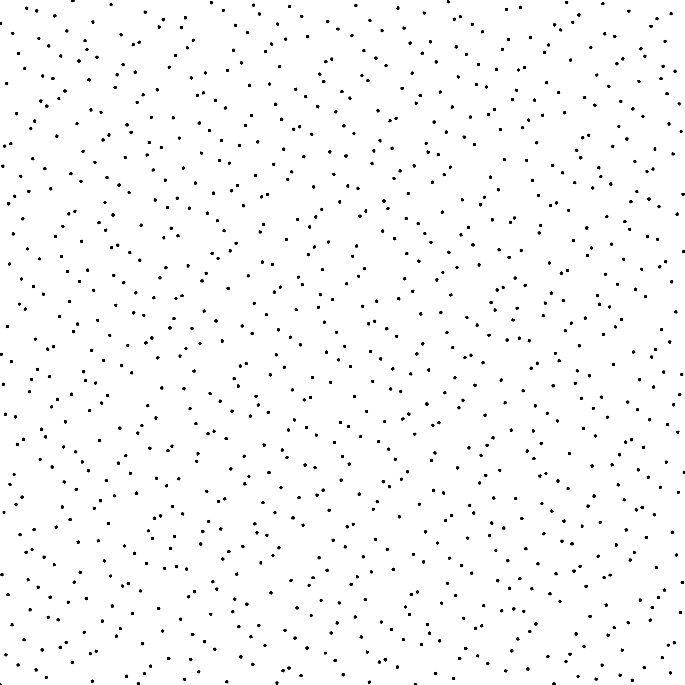
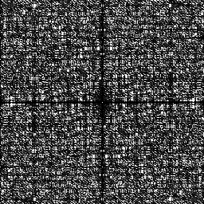
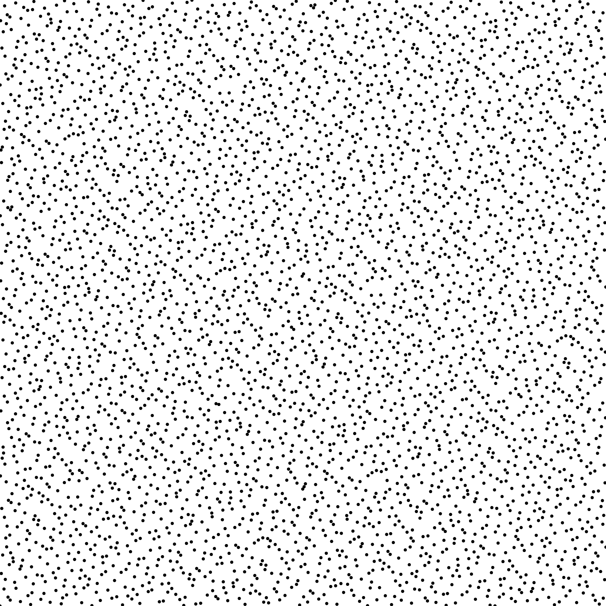
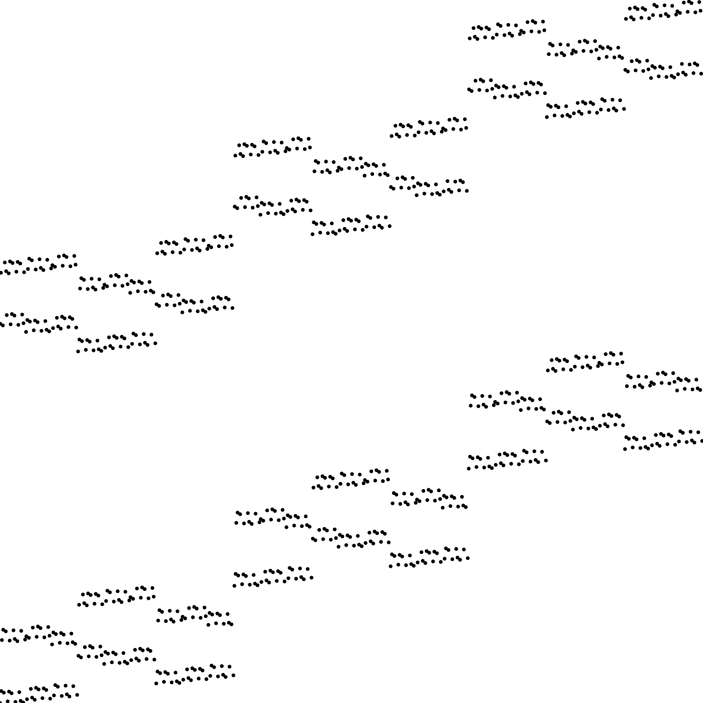

Sampler Halton [Hal64]
Files
src/samplers/SamplerHalton.hpp src/bin/samplers/Halton_*d*.cpp.cpp
Description
The Halton sequence. Samples are generated from reversing the n-ary representation of their index. Each dimension has a different basis and the low discrepancy is ensured if all basis are distinct and are prime numbers.
For a more precise description of this sampler and its performances in terms of aliasing and discrepancy, please refer to the following web bundle https://liris.cnrs.fr/ldbn/HTML_bundle/index.html.
License
BSD license, see the SamplerHalton.hpp file.
Execution
Parameters: [HELP] -o [string=output_pts.dat] Output file -m [int=1] Number of poinset realisations -n [ullint=1024] Number of samples to generate --silent Silent mode -h Displays this help message -x [uint=2] the basis for the first dimension -y [uint=3] the basis for the second dimension
To generate a 2D point set of 1024 samples with a halton distribution, we can use the following client line command:
./bin/samplers/Halton_2dd -n 1024 -o toto.dat
Or one can use the following C++ code:
PointsetWriter< 2, double, Point<2, double> > writer; writer.open("toto.dat"); Pointset< 2, double, Point<2, double> > pts; SamplerHalton s; unsigned int param_nbsamples = 1024; unsigned int bases[2] = {2, 3}; s.setBaseList(&bases[0], 2); s.generateSamples< 2, double, Point<2, double> >(pts, param_nbsamples); writer.writePointset(pts); writer.close();
Results
./bin/samplers/Halton_2dd -o halton_1024.edat -n 1024
File
halton_1024.edat
Pointset

{kind=link}
Fourier

{kind=link}
./bin/samplers/Halton_2dd -o halton_4096.edat -n 4096
File
halton_4096.edat
Pointset

{kind=link}
Fourier

./bin/samplers/Halton_2dd -x 5 -y 7 -o halton_57_1024.edat -n 1024
File
halton_57_1024.edat
Pointset

Fourier

When the basis are not relatively prime, the low discrepancy property is broken.
./bin/samplers/Halton_2dd -x 3 -y 6 -o halton_36_1024.edat -n 1024
File
halton_36 _1024.edat
Pointset

{kind=link}
Fourier